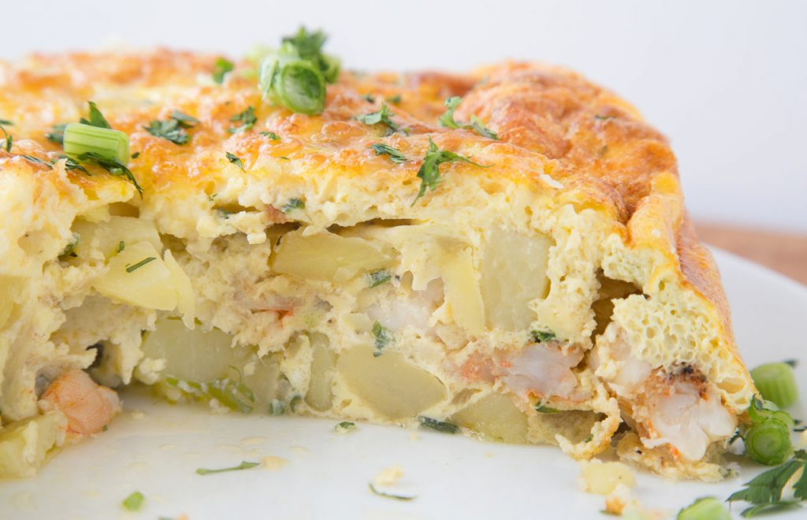

TORTILLA ESPANOLA
Western Dish (Spain)

Takes 45 minutes
Makes 8 servings
MAIN DISH
Ingredients
- Extra-virgin olive oil
- 5 Idaho potatoes, peeled, thinly sliced on a mandolin, and cut in half moons
- 1 yellow onion, finely diced
- 7 eggs (use 9 eggs if the potatoes are large)
- Kosher salt
Instruction
- 1. Heat some oil, enough to cover the potatoes, in a large saute pan over medium-low heat. Add the potatoes and cook, covered, until the potatoes are soft but not crispy, about 10 minutes.
- 2. While the potatoes are cooking, heat 1/4 cup olive oil in a second saute pan over medium heat. Add the onions and cook until soft and translucent, without any color, 5 to 7 minutes.
- 3. Once the potatoes and onions are soft, strain into a large bowl and drain off as much oil as possible. Set the oil aside for use in another dish.
- 4. In another large bowl, crack the eggs and whisk well. Stir in the potato and onion mixture and season with salt.
- 5. Heat 2 tablespoons olive oil in a nonstick fry pan over medium heat. When the oil is hot, add the potato and egg mixture, reduce the heat to medium-low, and cook until the eggs are set and the bottom is golden (use a spatula to peak underneath), 7 to 10 minutes.
- 6. Place a plate over the top of the fry pan large enough to cover the surface and carefully flip over the tortilla. Return the pan to the heat, add a little more oil if necessary, slide the tortilla back into the pan with the golden side facing up, and cook until the opposite side becomes golden, about 5 minutes. Flip back onto the plate, slice, and serve.
SOURCE : www.foodnetwork.com
Add to Cart
want to try this recipe? order ingredients now!